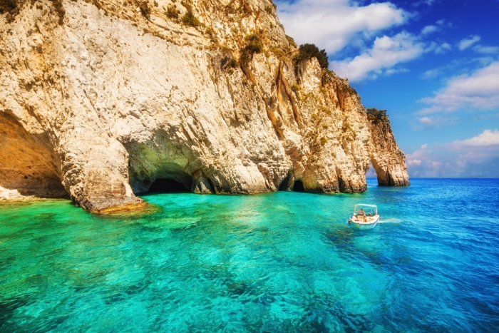

Letuj u Grckoj

Za one koji maštaju da odmor provedu na nekom tropskom ostrvu, a ne mogu to sebi da priušte, imamo savršeno rešenje!
Neka vaša mašta postane stvarnost na Zakintosu, jer ovde ćete pronaći savršene peščane plaže,
kupati se u prozirnom tirkiznom moru i uživati u jeftinim koktelima. Ova destinacija je puna nocnih
aktivnosti i zbog toga je ovo mesto dosta zastupljeno medju mladima
Da li smo spomenuli ronjenje i potragu za kornjačama?

Leptokarija je još jedan fantastičan i veoma čest izbor turista sa naših prostora poslednjih nekoliko godina.
Ovo grčko letovalište je idealna destinacija za porodice sa malom decom i sve one koji žele pravi odmor!
Čak i oni mlađi, koji više uživaju u noćnom životu neće pogrešiti ako Leptokariju odaberu kao svoju letnju destinaciju.
Jedna od bitnijih stvari koja bi pomogla da se odlučite baš za ovo grčko letovalište jeste njegova plaža.
Dugačka i peskovito – šljunkovita plaža i čisto more, bez većih talasa, glavna su odlika mesta.
Oaza mira, jedna od najlepših plaža Olimpske regije i raj za porodice sa malom decom - Nei Pori u jednoj rečenici.
Plaža u Nei Poriju važi za jednu od najkvalitetnijih u ovoj oblasti.
Izuzetno je široka i dugačka, prekrivena finim peskom, čista i odlično uređena.
Nei Pori je građen u malo drugačijem stilu od ostalih letovališta, jer je nekada služio kao baza američkih vojnika.
Izleti su odličan način da svoje letovanje učinite uzbudljivijim i sadržajnijim,
a Nei Pori ima zaista raznovrsnu ponudu. Najviše preporuka su dobili Meteori i ostrvo Skijatos.